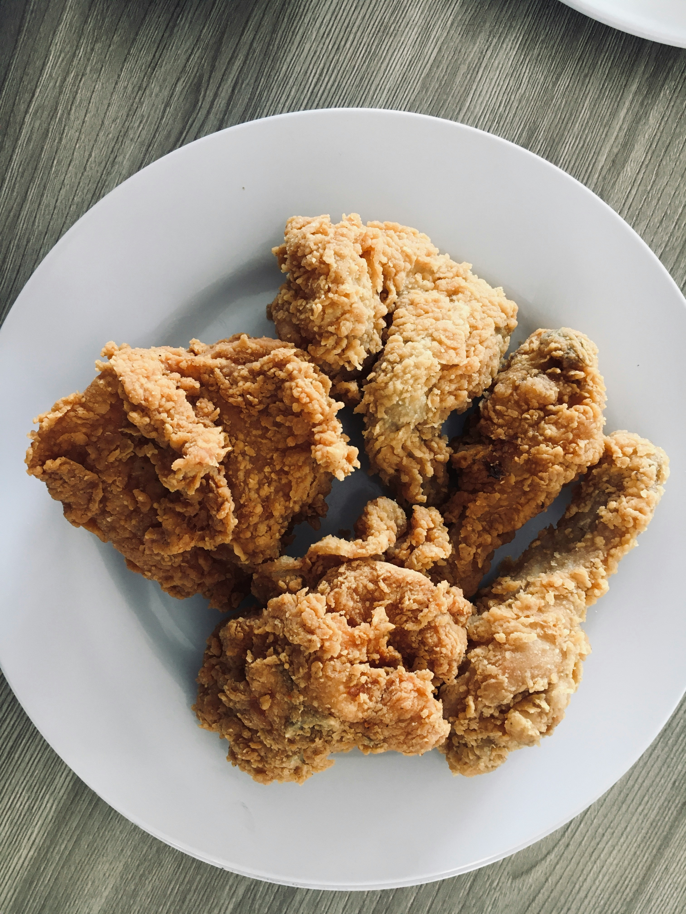

Home
Fried Chicken
Fried Chicken

Description
Indulge in the ultimate comfort food with our Crispy Fried Chicken! This mouthwatering dish combines a golden, crunchy exterior with tender, juicy meat that will leave your taste buds begging for more. Each piece of chicken is perfectly seasoned and coated in a flavorful breading, delivering a savory crunch with every bite.
Our recipe begins with marinating the chicken to infuse it with rich flavors, followed by a double-dipping technique that ensures an extra crispy crust. Whether you prefer classic buttermilk or a spicy variation, this fried chicken is versatile and ready to impress at any gathering.
Serve it hot with your favorite sides, from creamy coleslaw to fluffy mashed potatoes, and don’t forget a drizzle of honey or a side of dipping sauce for an added touch of deliciousness. Perfect for picnics, family dinners, or weekend feasts, this Crispy Fried Chicken is sure to become a staple in your kitchen!
Gather your ingredients, fire up that skillet, and get ready to savor the crunchy, succulent goodness of homemade fried chicken that rivals your favorite Southern diner!
Ingredients
For the chicken
- 4-6 pieces of chicken
- 2 cups buttermilk
- Salt and pepper, to taste
For the coating
- 2 cups all-purpose flour
- 1 teaspoon paprika
- 1 teaspoon garlic powder
- 1 teaspoon onion powder
- 1 teaspoon cayenne pepper
- 1 teaspoon salt
- 1/2 teaspoon black pepper
For frying
- Vegetable oil for frying; enough to cover the chicken pieces in the pan
Steps
Marinate the chicken
- In a large bowl, combine the buttermilk, hot sauce (if using), salt, and pepper. Add the chicken pieces, ensuring they are fully submerged.
- Cover and refrigerate for at least 2 hours, or preferably overnight. This will tenderize the chicken and add flavor.
Prepare the coating
- In a separate bowl, mix the flour, paprika, garlic powder, onion powder, cayenne pepper, salt, and black pepper until well combined.
Coat the chicken
- Remove the chicken from the buttermilk marinade, allowing any excess liquid to drip off.
- Dredge each piece in the seasoned flour, making sure it is fully coated.
- Shake off any excess flour and place on a wire rack or plate. Let sit for about 15 minutes to help the coating adhere.
Heat the oil
- In a large, deep skillet or Dutch oven, pour in enough oil to submerge the chicken pieces (about 2-3 inches deep). Heat the oil over medium-high heat until it reaches 350°F (175°C). You can test the oil by dropping a small piece of bread in; if it sizzles and bubbles, it's ready.
Fry the chicken
- Carefully place a few pieces of chicken in the hot oil, making sure not to overcrowd the pan, this will cause the temperature to drop.
- Fry for about 10-15 minutes per side, or until the chicken is golden brown and reaches an internal temperature of 165°F. Adjust the heat as necessary to maintain the oil temperature.